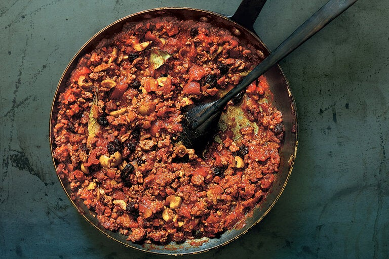

Picadillo

Description
Picadillo is one of the great dishes of the Cuban diaspora: a soft, fragrant stew of ground beef and tomatoes, with raisins added for sweetness and olives for salt. Versions of it exist across the Caribbean and into Latin America. This one, based loosely on a recipe that Nitza Villapol published in her cookbook “Cocina Criolla,” in 1954, and helped immeasurably by the advice of the Cuban-American food writer Betty Cortina, combines ground beef with intensely seasoned dried Spanish chorizo in a sofrito of onions, garlic and tomatoes, and scents it with red-wine vinegar, cinnamon and cumin, along with bay leaves and pinches of ground cloves and nutmeg. “Everyone who is of Cuban descent has a recipe for it,” Ms. Cortina said, “and each one of those is the most authentic. It’s a comfort food, probably the most consummate example of one in Cuban cuisine.”
Ingredients
- 2 tablespoons extra-virgin olive oil
- 2 medium-size yellow onions, peeled and chopped
- 2 ounces dried chorizo, diced
- 4 cloves garlic, peeled and minced
- 1 1/2 pounds ground beef
- Kosher salt and freshly ground black pepper
- 4 ripe tomatoes, chopped, or one 28-ounce can whole tomatoes, drained and crushed
- 2 tablespoons red-wine vinegar
- 1 tablespoon ground cinnamon
- 2 teaspoons ground cumin
- 2 bay leaves
- Pinch of ground cloves
- Pinch of nutmeg
- 2/3 cup raisins
- 2/3 cup pitted stuffed olives
Steps
- Put the olive oil in a large, heavy pan set over a medium-high flame, and heat until it begins to shimmer. Add onions, chorizo and garlic, stir to combine and cook until the onions have started to soften, approximately 10 minutes.
- Add the ground beef, and allow it to brown, crumbling the meat with a fork as it does. Season to taste with salt and black pepper.
- Add tomatoes, vinegar, cinnamon, cumin, bay leaves, cloves and nutmeg and stir to combine. Lower the heat, and let the stew simmer, covered, for approximately 30 minutes.
- Uncover the pan, and add the raisins and the olives. Allow the stew to cook for another 15 minutes or so, then serve, accompanied by white rice.